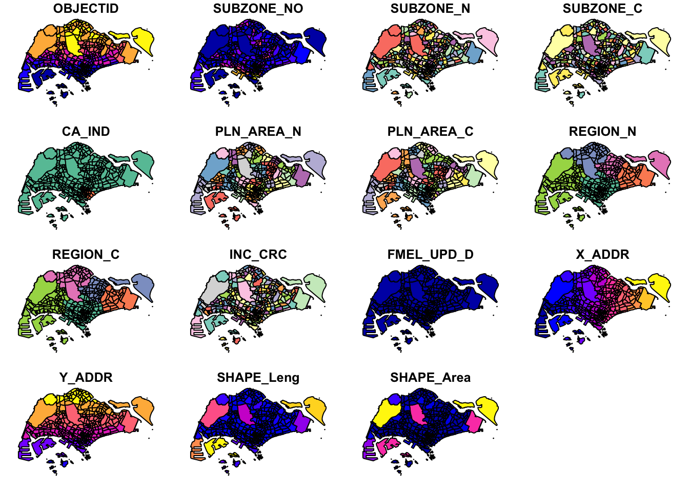
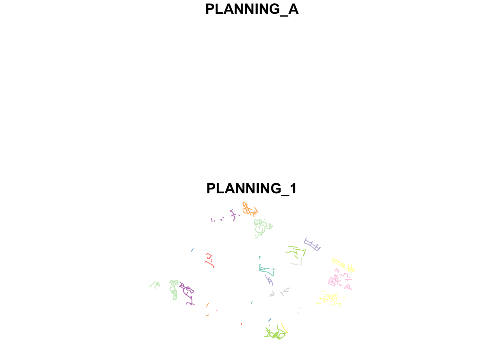
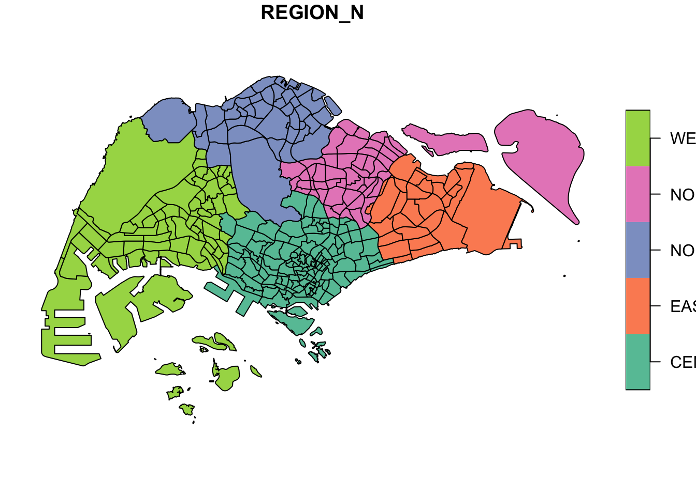
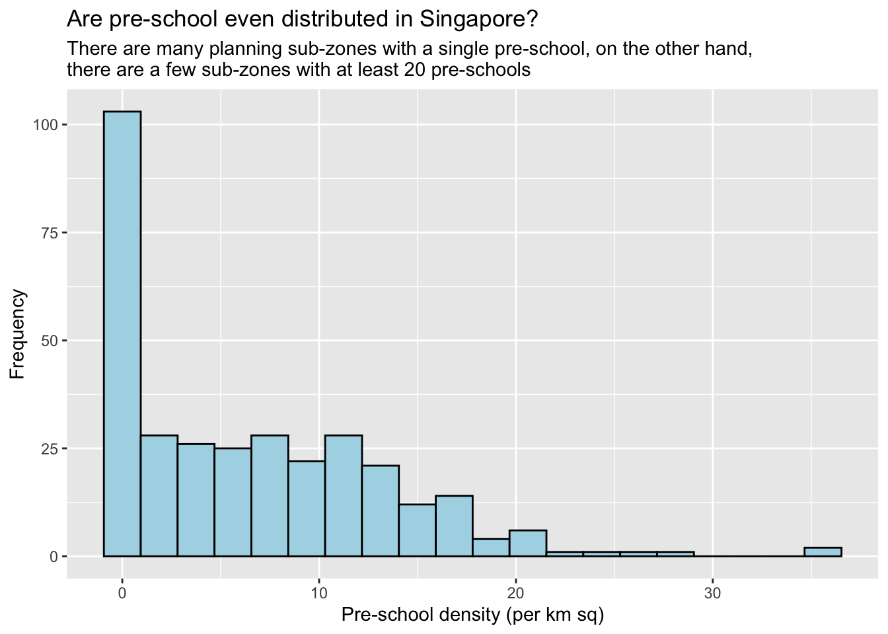
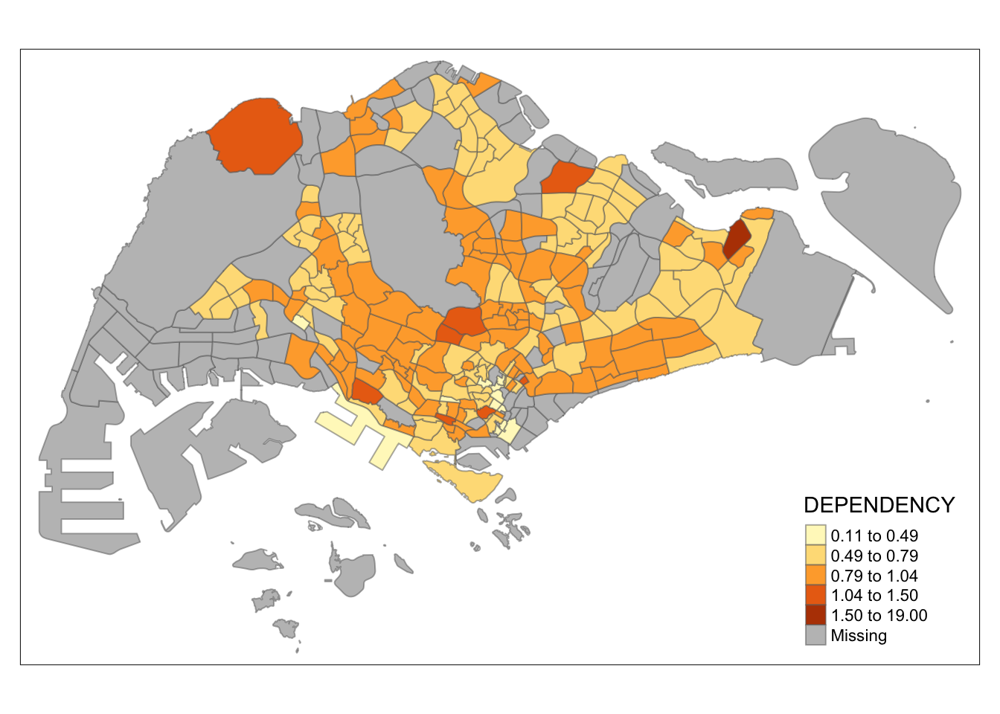
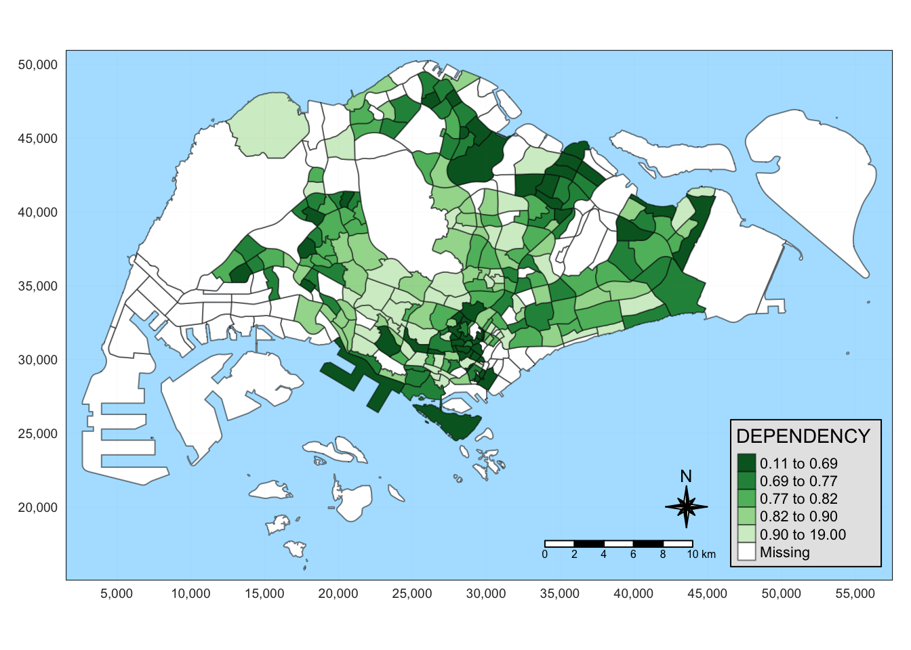
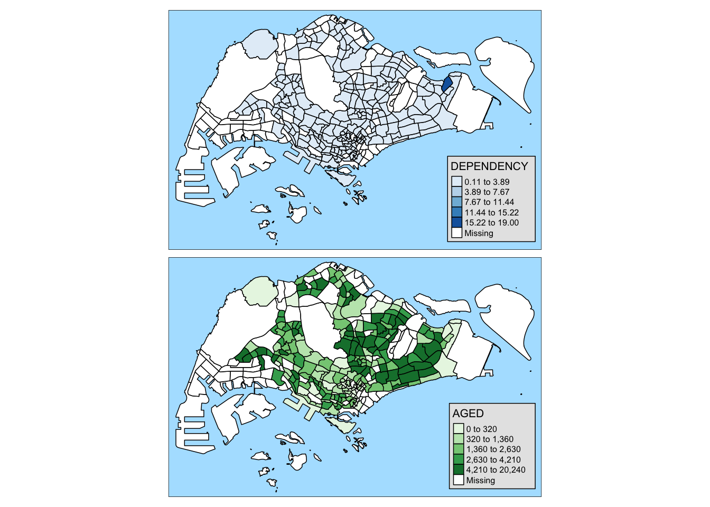
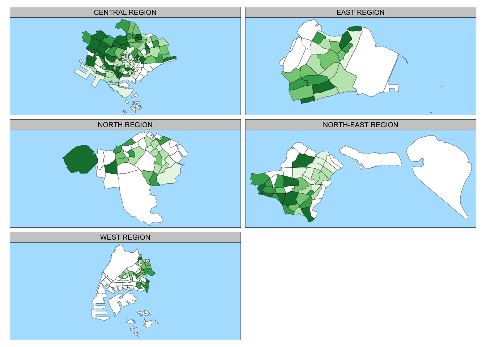
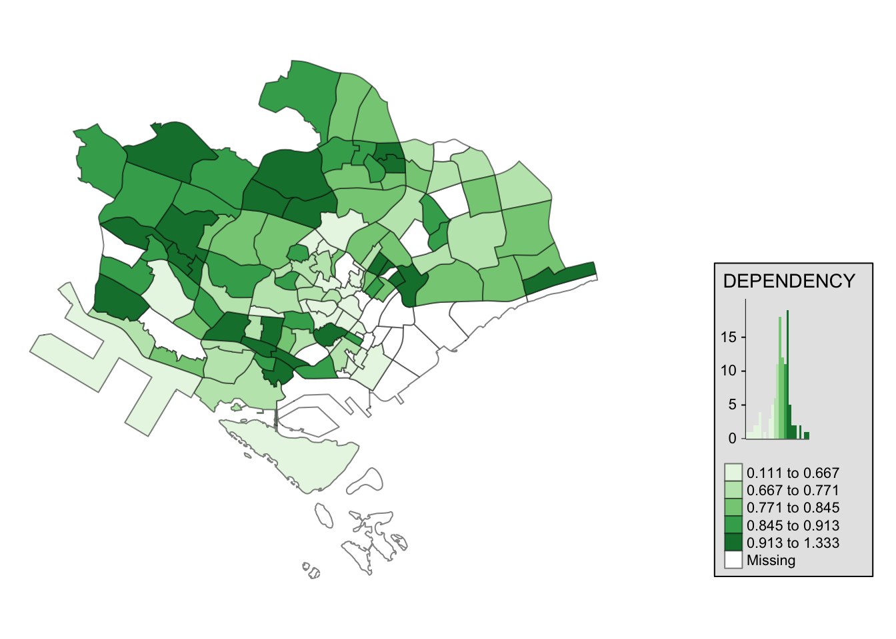

pacman::p_load(sf, tidyverse, tmap)Hands-on Exercise 1: Geospatial Data Wrangling and Choropleth Mapping with R
Overview
This hands-on exercise covers these chapters:
In this hands-on exercise, I learned about the following:
- Public Data Sets like the ones on data.gov.sg, LTADataMall, and InsideAirbnb.
- How to import data sets into RStudio
- Wrangling geospatial data in using different R packages like sf, tidyverse, etc.
- Creating thematic/choropleth maps with
tmap
Getting Started
Preparing the data sets
First, I downloaded the different data sets needed in this exercise.
Geospatial
Master Plan 2014 Subzone Boundary (Web) from data.gov.sg
Pre-Schools Location from data.gov.sg
Cycling Path from LTADataMall
Aspatial
Latest version of Singapore Airbnb listing data from Inside Airbnb
Singapore Residents by Planning Area / Subzone, Age Group, Sex and Type of Dwelling, June 2011-2020 from Department of Statistics, Singapore
Next, is putting them under the Hands-on_Ex1 directory, with the following file structure:
Hands-on_Ex1
├── Hands-on_Ex1.qmd
└── data
├── aspatial
│ ├── listings.csv
│ └── respopagesextod2011to2020.csv
└── geospatial
├── CyclingPathGazette.cpg
├── CyclingPathGazette.dbf
├── CyclingPathGazette.lyr
├── CyclingPathGazette.prj
├── CyclingPathGazette.sbn
├── CyclingPathGazette.sbx
├── CyclingPathGazette.shp
├── CyclingPathGazette.shp.xml
├── CyclingPathGazette.shx
├── MP14_SUBZONE_WEB_PL.dbf
├── MP14_SUBZONE_WEB_PL.prj
├── MP14_SUBZONE_WEB_PL.sbn
├── MP14_SUBZONE_WEB_PL.sbx
├── MP14_SUBZONE_WEB_PL.shp
├── MP14_SUBZONE_WEB_PL.shp.xml
├── MP14_SUBZONE_WEB_PL.shx
└── PreSchoolsLocation.kmlInstalling R packages
I used the code below to install the R packages used in the exercise:
Chapter 1: Data Wrangling with R
Importing Geospatial Data
After setting up the data sets and the R packages, we can proceed with importing the geospatial data.
Master Plan 2014 Subzone Boundary (Web)
To import the data set to RStudio, I used st_read() :
mpsz <- st_read(dsn = "data/geospatial", layer = "MP14_SUBZONE_WEB_PL")Reading layer `MP14_SUBZONE_WEB_PL' from data source
`/Users/kjcpaas/Documents/Grad School/ISSS624/Project/ISSS624/Hands-on_Ex1/data/geospatial'
using driver `ESRI Shapefile'
Simple feature collection with 323 features and 15 fields
Geometry type: MULTIPOLYGON
Dimension: XY
Bounding box: xmin: 2667.538 ymin: 15748.72 xmax: 56396.44 ymax: 50256.33
Projected CRS: SVY21I encountered the error below along the way:
Cannot open layer MasterPlan2014SubzoneBoundaryWebKMLThis is because I originally downloaded the kml file instead of the shp file. After using the shp file, the st_read() succeeded.
ℹ️ My biggest take-away for this is that
st_readreadsshpdata set by default. (this would be debunked later)
After running the code, we should see the mpsz data in the environment.

Cycling Path Data
Equipped with my learning from the previous step, I was able to quickly figure out that importing this data set can be done by simply changing the layer parameter from the previous code:
cyclingpath <- st_read(dsn = "data/geospatial", layer = "CyclingPathGazette")Reading layer `CyclingPathGazette' from data source
`/Users/kjcpaas/Documents/Grad School/ISSS624/Project/ISSS624/Hands-on_Ex1/data/geospatial'
using driver `ESRI Shapefile'
Simple feature collection with 2558 features and 2 fields
Geometry type: MULTILINESTRING
Dimension: XY
Bounding box: xmin: 11854.32 ymin: 28347.98 xmax: 42626.09 ymax: 48948.15
Projected CRS: SVY21However, the difference is that this geometry has polyline features, while the previous has polygon features.
Pre-Schools Location Data
Unlike the others, this data set is in kml format instead of shp format. I used the following code to import:
preschool <- st_read("data/geospatial/PreSchoolsLocation.kml")Reading layer `PRESCHOOLS_LOCATION' from data source
`/Users/kjcpaas/Documents/Grad School/ISSS624/Project/ISSS624/Hands-on_Ex1/data/geospatial/PreSchoolsLocation.kml'
using driver `KML'
Simple feature collection with 2290 features and 2 fields
Geometry type: POINT
Dimension: XYZ
Bounding box: xmin: 103.6878 ymin: 1.247759 xmax: 103.9897 ymax: 1.462134
z_range: zmin: 0 zmax: 0
Geodetic CRS: WGS 84ℹ️ Contrary to my previous take-away,
st_read()can readkmlfiles by default. In fact, readingshpfiles require more parameters likedsnandlayer.
Checking Contents of Data Frames
Checking the geometry of data frames
Using st_geometry() returns information about the geometry of the data frame.
st_geometry(mpsz)Geometry set for 323 features
Geometry type: MULTIPOLYGON
Dimension: XY
Bounding box: xmin: 2667.538 ymin: 15748.72 xmax: 56396.44 ymax: 50256.33
Projected CRS: SVY21
First 5 geometries:It gave the same geometric information as when importing the shape data but with additional details like the first 5 geometries.
Getting overview of geospatial data
Using glimpse() gives useful information about the columns, data types, values. For example:
glimpse(mpsz)Rows: 323
Columns: 16
$ OBJECTID <int> 1, 2, 3, 4, 5, 6, 7, 8, 9, 10, 11, 12, 13, 14, 15, 16, 17, …
$ SUBZONE_NO <int> 1, 1, 3, 8, 3, 7, 9, 2, 13, 7, 12, 6, 1, 5, 1, 1, 3, 2, 2, …
$ SUBZONE_N <chr> "MARINA SOUTH", "PEARL'S HILL", "BOAT QUAY", "HENDERSON HIL…
$ SUBZONE_C <chr> "MSSZ01", "OTSZ01", "SRSZ03", "BMSZ08", "BMSZ03", "BMSZ07",…
$ CA_IND <chr> "Y", "Y", "Y", "N", "N", "N", "N", "Y", "N", "N", "N", "N",…
$ PLN_AREA_N <chr> "MARINA SOUTH", "OUTRAM", "SINGAPORE RIVER", "BUKIT MERAH",…
$ PLN_AREA_C <chr> "MS", "OT", "SR", "BM", "BM", "BM", "BM", "SR", "QT", "QT",…
$ REGION_N <chr> "CENTRAL REGION", "CENTRAL REGION", "CENTRAL REGION", "CENT…
$ REGION_C <chr> "CR", "CR", "CR", "CR", "CR", "CR", "CR", "CR", "CR", "CR",…
$ INC_CRC <chr> "5ED7EB253F99252E", "8C7149B9EB32EEFC", "C35FEFF02B13E0E5",…
$ FMEL_UPD_D <date> 2014-12-05, 2014-12-05, 2014-12-05, 2014-12-05, 2014-12-05…
$ X_ADDR <dbl> 31595.84, 28679.06, 29654.96, 26782.83, 26201.96, 25358.82,…
$ Y_ADDR <dbl> 29220.19, 29782.05, 29974.66, 29933.77, 30005.70, 29991.38,…
$ SHAPE_Leng <dbl> 5267.381, 3506.107, 1740.926, 3313.625, 2825.594, 4428.913,…
$ SHAPE_Area <dbl> 1630379.27, 559816.25, 160807.50, 595428.89, 387429.44, 103…
$ geometry <MULTIPOLYGON [m]> MULTIPOLYGON (((31495.56 30..., MULTIPOLYGON (…This will be very useful to scan for the available data and which columns are useful for analysis.
Revealing complete information of feature objects
Using head() can give full information about objects in the data set. For example:
head(mpsz, n=5)Simple feature collection with 5 features and 15 fields
Geometry type: MULTIPOLYGON
Dimension: XY
Bounding box: xmin: 25867.68 ymin: 28369.47 xmax: 32362.39 ymax: 30435.54
Projected CRS: SVY21
OBJECTID SUBZONE_NO SUBZONE_N SUBZONE_C CA_IND PLN_AREA_N
1 1 1 MARINA SOUTH MSSZ01 Y MARINA SOUTH
2 2 1 PEARL'S HILL OTSZ01 Y OUTRAM
3 3 3 BOAT QUAY SRSZ03 Y SINGAPORE RIVER
4 4 8 HENDERSON HILL BMSZ08 N BUKIT MERAH
5 5 3 REDHILL BMSZ03 N BUKIT MERAH
PLN_AREA_C REGION_N REGION_C INC_CRC FMEL_UPD_D X_ADDR
1 MS CENTRAL REGION CR 5ED7EB253F99252E 2014-12-05 31595.84
2 OT CENTRAL REGION CR 8C7149B9EB32EEFC 2014-12-05 28679.06
3 SR CENTRAL REGION CR C35FEFF02B13E0E5 2014-12-05 29654.96
4 BM CENTRAL REGION CR 3775D82C5DDBEFBD 2014-12-05 26782.83
5 BM CENTRAL REGION CR 85D9ABEF0A40678F 2014-12-05 26201.96
Y_ADDR SHAPE_Leng SHAPE_Area geometry
1 29220.19 5267.381 1630379.3 MULTIPOLYGON (((31495.56 30...
2 29782.05 3506.107 559816.2 MULTIPOLYGON (((29092.28 30...
3 29974.66 1740.926 160807.5 MULTIPOLYGON (((29932.33 29...
4 29933.77 3313.625 595428.9 MULTIPOLYGON (((27131.28 30...
5 30005.70 2825.594 387429.4 MULTIPOLYGON (((26451.03 30...This will return the first 5 objects, and the number of objects can be set by specifying a value for n.
Another function that is useful for this purpose is tail(), which returns items from the end of the data set. For example:
tail(mpsz, n=2)Simple feature collection with 2 features and 15 fields
Geometry type: MULTIPOLYGON
Dimension: XY
Bounding box: xmin: 23378.74 ymin: 48569.62 xmax: 28343.2 ymax: 50256.33
Projected CRS: SVY21
OBJECTID SUBZONE_NO SUBZONE_N SUBZONE_C CA_IND PLN_AREA_N PLN_AREA_C
322 322 7 THE WHARVES SBSZ07 N SEMBAWANG SB
323 323 8 SENOKO NORTH SBSZ08 N SEMBAWANG SB
REGION_N REGION_C INC_CRC FMEL_UPD_D X_ADDR Y_ADDR
322 NORTH REGION NR 6D89875A351CF51C 2014-12-05 26945.07 49552.79
323 NORTH REGION NR A800CBEE879C1BF9 2014-12-05 24665.79 49482.60
SHAPE_Leng SHAPE_Area geometry
322 11828.878 1635808 MULTIPOLYGON (((26219.89 50...
323 7392.129 2241387 MULTIPOLYGON (((26047.11 50...This returned the items on rows 322 and 323 instead of 1 and 2 if we were to use head().
However, I wonder which use cases these functions would be useful as we can easily inspect the full data when looking at all the Environment Data in RStudio. 🤔
Plotting Geospatial Data
plot(mpsz, max.plot = 15)
I was pleasantly surprised to find that the rendering of the plots was so fast! It only took 1 second or so on my machine for 300+ features and 15 fields. This is really useful for quick look of the data.
Trying it on the cycling path data was also very fast though the result was not so useful for me as it needs to be overlayed with a map like above.
plot(cyclingpath)
I wonder how long it would take once we have larger data sets. 🤔
As someone not originally from Singapore, I am still familiarizing myself with the countries geography so I’ll plot the regions first.
plot(mpsz['REGION_N'])
This can still be visualized better, especially the names in the legend got cut off. From the Help pages on RStudio, this function has a lot more parameters and I’ll explore it once I have more time.
Projections
Correcting the EPSG code
st_crs(mpsz)Coordinate Reference System:
User input: SVY21
wkt:
PROJCRS["SVY21",
BASEGEOGCRS["SVY21[WGS84]",
DATUM["World Geodetic System 1984",
ELLIPSOID["WGS 84",6378137,298.257223563,
LENGTHUNIT["metre",1]],
ID["EPSG",6326]],
PRIMEM["Greenwich",0,
ANGLEUNIT["Degree",0.0174532925199433]]],
CONVERSION["unnamed",
METHOD["Transverse Mercator",
ID["EPSG",9807]],
PARAMETER["Latitude of natural origin",1.36666666666667,
ANGLEUNIT["Degree",0.0174532925199433],
ID["EPSG",8801]],
PARAMETER["Longitude of natural origin",103.833333333333,
ANGLEUNIT["Degree",0.0174532925199433],
ID["EPSG",8802]],
PARAMETER["Scale factor at natural origin",1,
SCALEUNIT["unity",1],
ID["EPSG",8805]],
PARAMETER["False easting",28001.642,
LENGTHUNIT["metre",1],
ID["EPSG",8806]],
PARAMETER["False northing",38744.572,
LENGTHUNIT["metre",1],
ID["EPSG",8807]]],
CS[Cartesian,2],
AXIS["(E)",east,
ORDER[1],
LENGTHUNIT["metre",1,
ID["EPSG",9001]]],
AXIS["(N)",north,
ORDER[2],
LENGTHUNIT["metre",1,
ID["EPSG",9001]]]]mpsz3414 <- st_set_crs(mpsz, 3414)st_crs(mpsz3414)Coordinate Reference System:
User input: EPSG:3414
wkt:
PROJCRS["SVY21 / Singapore TM",
BASEGEOGCRS["SVY21",
DATUM["SVY21",
ELLIPSOID["WGS 84",6378137,298.257223563,
LENGTHUNIT["metre",1]]],
PRIMEM["Greenwich",0,
ANGLEUNIT["degree",0.0174532925199433]],
ID["EPSG",4757]],
CONVERSION["Singapore Transverse Mercator",
METHOD["Transverse Mercator",
ID["EPSG",9807]],
PARAMETER["Latitude of natural origin",1.36666666666667,
ANGLEUNIT["degree",0.0174532925199433],
ID["EPSG",8801]],
PARAMETER["Longitude of natural origin",103.833333333333,
ANGLEUNIT["degree",0.0174532925199433],
ID["EPSG",8802]],
PARAMETER["Scale factor at natural origin",1,
SCALEUNIT["unity",1],
ID["EPSG",8805]],
PARAMETER["False easting",28001.642,
LENGTHUNIT["metre",1],
ID["EPSG",8806]],
PARAMETER["False northing",38744.572,
LENGTHUNIT["metre",1],
ID["EPSG",8807]]],
CS[Cartesian,2],
AXIS["northing (N)",north,
ORDER[1],
LENGTHUNIT["metre",1]],
AXIS["easting (E)",east,
ORDER[2],
LENGTHUNIT["metre",1]],
USAGE[
SCOPE["Cadastre, engineering survey, topographic mapping."],
AREA["Singapore - onshore and offshore."],
BBOX[1.13,103.59,1.47,104.07]],
ID["EPSG",3414]]I am not familiar with what the st_crs() returns and I wouldn’t have thought that EPSG needs correcting since I don’t have the domain knowledge. This is one of my biggest take away for this exercise.
Projection Transformation
When using st_set_crs(), I got the warning below:
Warning: st_crs<- : replacing crs does not reproject data; use st_transform for thatAs such, the mpsz3414 data before may not be projected properly despite having the correct EPSG value.
Next, I will transform the pre-school data:
preschool3414 <- st_transform(preschool, crs=3414)
st_geometry(preschool3414)Geometry set for 2290 features
Geometry type: POINT
Dimension: XYZ
Bounding box: xmin: 11810.03 ymin: 25596.33 xmax: 45404.24 ymax: 49300.88
z_range: zmin: 0 zmax: 0
Projected CRS: SVY21 / Singapore TM
First 5 geometries:Importing and Converting Aspatial Data
For aspatial data, I used read_csv() to import the data.
listings <- read_csv("data/aspatial/listings.csv")From this, we have candidate geospatial fields that we can use, longitude and latitude.
Checking the data contents of these field can confirm if we can really use the data.
list(listings)[[1]]
# A tibble: 3,483 × 18
id name host_id host_name neighbourhood_group neighbourhood latitude
<dbl> <chr> <dbl> <chr> <chr> <chr> <dbl>
1 71609 Villa in… 367042 Belinda East Region Tampines 1.35
2 71896 Home in … 367042 Belinda East Region Tampines 1.35
3 71903 Home in … 367042 Belinda East Region Tampines 1.35
4 275343 Rental u… 1439258 Kay Central Region Bukit Merah 1.29
5 275344 Rental u… 1439258 Kay Central Region Bukit Merah 1.29
6 289234 Home in … 367042 Belinda East Region Tampines 1.34
7 294281 Rental u… 1521514 Elizabeth Central Region Newton 1.31
8 324945 Rental u… 1439258 Kay Central Region Bukit Merah 1.29
9 330095 Rental u… 1439258 Kay Central Region Bukit Merah 1.29
10 369141 Place to… 1521514 Elizabeth Central Region Newton 1.31
# ℹ 3,473 more rows
# ℹ 11 more variables: longitude <dbl>, room_type <chr>, price <dbl>,
# minimum_nights <dbl>, number_of_reviews <dbl>, last_review <date>,
# reviews_per_month <dbl>, calculated_host_listings_count <dbl>,
# availability_365 <dbl>, number_of_reviews_ltm <dbl>, license <chr>After confirming that longitude and latitude can be used as geospatial data, I transformed this data to geospatial data.
listings_sf <- st_as_sf(listings,
coords = c("longitude", "latitude"),
crs=4326) %>%
st_transform(crs = 3414)Checking the new data frame, it was confirmed that it was transformed to a geospatial data.
glimpse(listings_sf)Rows: 3,483
Columns: 17
$ id <dbl> 71609, 71896, 71903, 275343, 275344, 28…
$ name <chr> "Villa in Singapore · ★4.44 · 2 bedroom…
$ host_id <dbl> 367042, 367042, 367042, 1439258, 143925…
$ host_name <chr> "Belinda", "Belinda", "Belinda", "Kay",…
$ neighbourhood_group <chr> "East Region", "East Region", "East Reg…
$ neighbourhood <chr> "Tampines", "Tampines", "Tampines", "Bu…
$ room_type <chr> "Private room", "Private room", "Privat…
$ price <dbl> 150, 80, 80, 55, 69, 220, 85, 75, 45, 7…
$ minimum_nights <dbl> 92, 92, 92, 60, 60, 92, 92, 60, 60, 92,…
$ number_of_reviews <dbl> 20, 24, 47, 22, 17, 12, 133, 18, 6, 81,…
$ last_review <date> 2020-01-17, 2019-10-13, 2020-01-09, 20…
$ reviews_per_month <dbl> 0.14, 0.16, 0.31, 0.17, 0.12, 0.09, 0.9…
$ calculated_host_listings_count <dbl> 5, 5, 5, 52, 52, 5, 7, 52, 52, 7, 7, 1,…
$ availability_365 <dbl> 89, 89, 89, 275, 274, 89, 365, 365, 365…
$ number_of_reviews_ltm <dbl> 0, 0, 0, 0, 3, 0, 0, 1, 3, 0, 0, 0, 0, …
$ license <chr> NA, NA, NA, "S0399", "S0399", NA, NA, "…
$ geometry <POINT [m]> POINT (41972.5 36390.05), POINT (…Geoprocessing
Buffering
buffer_cycling <- st_buffer(cyclingpath,
dist=5, nQuadSegs = 30)
buffer_cycling$AREA <- st_area(buffer_cycling)
sum(buffer_cycling$AREA)1774367 [m^2]After seeing my classmate’s question on Piazza, I was also curious about the effect of nQuadSegs to the area. From the documentation, this is the number of segments created per quadrant.
My understanding of this is since each quadrant has 90 degrees, having nQuadSegs = 30 means 1 segment per 3 degrees. If this correct, my hypothesis is that the higher nQuadSegs is, the more accurate it is. This is because nQuadSegs=1 would be a square, and it becomes a polygon with more sides the higher nQuadSegs is. The higher nQuadSegs, the smoother the polygon becomes and it gets closer to being a circle.
I’m testing the theory below and if my hypothesis is correct, the area should not differ much past nQuadSegs=180
buffer_cycling0 <- st_buffer(cyclingpath,
dist=5, nQuadSegs = 0)
buffer_cycling0$AREA <- st_area(buffer_cycling0)
sum(buffer_cycling0$AREA)1700331 [m^2]buffer_cycling10 <- st_buffer(cyclingpath,
dist=5, nQuadSegs = 10)
buffer_cycling10$AREA <- st_area(buffer_cycling10)
sum(buffer_cycling10$AREA)1773584 [m^2]buffer_cycling45 <- st_buffer(cyclingpath,
dist=5, nQuadSegs = 45)
buffer_cycling45$AREA <- st_area(buffer_cycling45)
sum(buffer_cycling45$AREA)1774421 [m^2]buffer_cycling90 <- st_buffer(cyclingpath,
dist=5, nQuadSegs = 90)
buffer_cycling90$AREA <- st_area(buffer_cycling90)
sum(buffer_cycling90$AREA)1774454 [m^2]buffer_cycling180 <- st_buffer(cyclingpath,
dist=5, nQuadSegs = 180)
buffer_cycling180$AREA <- st_area(buffer_cycling180)
sum(buffer_cycling180$AREA)1774462 [m^2]buffer_cycling1800 <- st_buffer(cyclingpath,
dist=5, nQuadSegs = 1800)
buffer_cycling1800$AREA <- st_area(buffer_cycling1800)
sum(buffer_cycling1800$AREA)1774465 [m^2]As we can see, from 180 to 1800 the area only changed by 3m2 but the differences are larger in lower values. My conclusion is that the higher nQuadSegs, the more accurate the value we will get. However, the calculation took much longer. The extremely small accuracy benefit may not be worth the trade-off in most cases.
The result when using nQuadSegs of 30 is already very close to the result when it is 1800.
\[ 1774367/1774465 = 99.99\% \]
Point-in-polygon count
mpsz3414$`PreSch Count`<- lengths(st_intersects(mpsz3414, preschool3414))
summary(mpsz3414$`PreSch Count`) Min. 1st Qu. Median Mean 3rd Qu. Max.
0.00 0.00 4.00 7.09 10.00 72.00 This means that there are subzones without pre-school while some have as many as 72.
top_n(mpsz3414, 1, `PreSch Count`)Simple feature collection with 1 feature and 16 fields
Geometry type: MULTIPOLYGON
Dimension: XY
Bounding box: xmin: 39655.33 ymin: 35966 xmax: 42940.57 ymax: 38622.37
Projected CRS: SVY21 / Singapore TM
OBJECTID SUBZONE_NO SUBZONE_N SUBZONE_C CA_IND PLN_AREA_N PLN_AREA_C
1 189 2 TAMPINES EAST TMSZ02 N TAMPINES TM
REGION_N REGION_C INC_CRC FMEL_UPD_D X_ADDR Y_ADDR SHAPE_Leng
1 EAST REGION ER 21658EAAF84F4D8D 2014-12-05 41122.55 37392.39 10180.62
SHAPE_Area geometry PreSch Count
1 4339824 MULTIPOLYGON (((42196.76 38... 72The subzone with the most pre-schools is Tampines East.
To calculate the density of pre-schools:
mpsz3414$Area <- mpsz3414 %>%
st_area()
mpsz3414 <- mpsz3414 %>%
mutate(`PreSch Density` = `PreSch Count`/Area * 1000000)Let’s see the top 3 subzones with the highest pre-school density.
top_n(mpsz3414, 3, `PreSch Density`)Simple feature collection with 3 features and 18 fields
Geometry type: MULTIPOLYGON
Dimension: XY
Bounding box: xmin: 25594.22 ymin: 28623.75 xmax: 29976.93 ymax: 48182.13
Projected CRS: SVY21 / Singapore TM
OBJECTID SUBZONE_NO SUBZONE_N SUBZONE_C CA_IND PLN_AREA_N
1 27 8 CECIL DTSZ08 Y DOWNTOWN CORE
2 278 3 MANDAI ESTATE MDSZ03 N MANDAI
3 291 3 SEMBAWANG CENTRAL SBSZ03 N SEMBAWANG
PLN_AREA_C REGION_N REGION_C INC_CRC FMEL_UPD_D X_ADDR
1 DT CENTRAL REGION CR 65AA82AF6F4D925D 2014-12-05 29730.20
2 MD NORTH REGION NR F6266F7368DBB9AB 2014-12-05 27082.70
3 SB NORTH REGION NR 772A64AB9A93FC3A 2014-12-05 26268.73
Y_ADDR SHAPE_Leng SHAPE_Area geometry PreSch Count
1 29011.33 2116.095 196619.9 MULTIPOLYGON (((29808.18 28... 7
2 45367.46 1633.708 143137.9 MULTIPOLYGON (((27119.56 45... 5
3 47558.08 3955.118 962437.4 MULTIPOLYGON (((26311.14 46... 27
Area PreSch Density
1 196619.9 [m^2] 35.60169 [1/m^2]
2 143137.9 [m^2] 34.93134 [1/m^2]
3 962437.4 [m^2] 28.05377 [1/m^2]Despite Tampines East having the most pre-schools, Cecil has the highest pre-school density. Tampines East might be much bigger than Cecil so its Pre-school Density is lower.
Exploratory Data Analysis (EDA)
Below is the histogram for Pre-school Density:
hist(mpsz3414$`PreSch Density`)
We improvef this graph by using ggplot.
ggplot(data=mpsz3414,
aes(x= as.numeric(`PreSch Density`)))+
geom_histogram(bins=20,
color="black",
fill="light blue") +
labs(title = "Are pre-school even distributed in Singapore?",
subtitle= "There are many planning sub-zones with a single pre-school, on the other hand, \nthere are a few sub-zones with at least 20 pre-schools",
x = "Pre-school density (per km sq)",
y = "Frequency")
We can also create a scatter plot.
ggplot(data=mpsz3414,
aes(y = `PreSch Count`,
x= as.numeric(`PreSch Density`)))+
geom_point(color="black",
fill="light blue") +
xlim(0, 40) +
ylim(0, 40) +
labs(title = "",
x = "Pre-school density (per km sq)",
y = "Pre-school count")
Chapter 2: Choropleth mapping with R
Data Wrangling
Importing geospatial data
To import the MPSZ data set to RStudio, I used the same code chunk in the previous exercise.
mpsz <- st_read(dsn = "data/geospatial", layer = "MP14_SUBZONE_WEB_PL")Reading layer `MP14_SUBZONE_WEB_PL' from data source
`/Users/kjcpaas/Documents/Grad School/ISSS624/Project/ISSS624/Hands-on_Ex1/data/geospatial'
using driver `ESRI Shapefile'
Simple feature collection with 323 features and 15 fields
Geometry type: MULTIPOLYGON
Dimension: XY
Bounding box: xmin: 2667.538 ymin: 15748.72 xmax: 56396.44 ymax: 50256.33
Projected CRS: SVY21Importing aspatial data
The csv data is an aspatial data so read_csv() must be used instead of st_read():
popdata <- read_csv("data/aspatial/respopagesextod2011to2020.csv")Data preparation
popdata2020 <- popdata %>%
filter(Time == 2020) %>%
group_by(PA, SZ, AG) %>%
summarise(`POP` = sum(`Pop`)) %>%
ungroup()%>%
pivot_wider(names_from=AG,
values_from=POP) %>%
mutate(YOUNG = rowSums(.[3:6])
+rowSums(.[12])) %>%
mutate(`ECONOMY ACTIVE` = rowSums(.[7:11])+
rowSums(.[13:15]))%>%
mutate(`AGED`=rowSums(.[16:21])) %>%
mutate(`TOTAL`=rowSums(.[3:21])) %>%
mutate(`DEPENDENCY` = (`YOUNG` + `AGED`)
/`ECONOMY ACTIVE`) %>%
select(`PA`, `SZ`, `YOUNG`,
`ECONOMY ACTIVE`, `AGED`,
`TOTAL`, `DEPENDENCY`)I don’t fully understand this entire code chunk yet but I know it filtered for data from 2020 only and did some aggregations based on the age groups, PA, and AZ. New fields like YOUNG and AGED .
Next, I joined this data with the mpsz data via SZ. However, we still need to make sure that the SZ values are uppercase to match mpsz’s SUBZONE_N.
popdata2020 <- popdata2020 %>%
mutate_at(.vars = vars(PA, SZ),
.funs = list(toupper)) %>%
filter(`ECONOMY ACTIVE` > 0)Then the 2 data sets can be joined.
mpsz_pop2020 <- left_join(mpsz, popdata2020,
by = c("SUBZONE_N" = "SZ"))Lastly, write the rds of the combined data set.
write_rds(mpsz_pop2020, "data/rds/mpszpop2020.rds")⚠️ This failed on the first try so I had to create the
rdsdirectory underdata/before trying again.
Choropleth Mapping Geospatial Data Using tmap
Using qtm()
tmap_mode("plot")
qtm(mpsz_pop2020,
fill = "DEPENDENCY")
I tried to create an interactive map by using view instead of plot but an error about invalid polygons was returned.
Using tmap elements
tm_shape(mpsz_pop2020)+
tm_fill("DEPENDENCY",
style = "quantile",
palette = "Blues",
title = "Dependency ratio") +
tm_layout(main.title = "Distribution of Dependency Ratio by planning subzone",
main.title.position = "center",
main.title.size = 1.2,
legend.height = 0.45,
legend.width = 0.35,
frame = TRUE) +
tm_borders(alpha = 0.5) +
tm_compass(type="8star", size = 2) +
tm_scale_bar() +
tm_grid(alpha =0.2) +
tm_credits("Source: Planning Sub-zone boundary from Urban Redevelopment Authorithy (URA)\n and Population data from Department of Statistics DOS",
position = c("left", "bottom"))
From this part, I saw that with tm_shape as base, thematic maps can be created by doing + with the tmap actions. I will explore this later but I found a good reference on where to start: https://cran.r-project.org/web/packages/tmap/vignettes/tmap-getstarted.html.
Classification methods
Quantile
tm_shape(mpsz_pop2020)+
tm_fill("DEPENDENCY",
n = 5,
style = "jenks") +
tm_borders(alpha = 0.5)
Equal
tm_shape(mpsz_pop2020)+
tm_fill("DEPENDENCY",
n = 5,
style = "equal") +
tm_borders(alpha = 0.5)
My main takeaway for this is that the quantile classification deals with outliers better. In this data set, there is an outlier subzone. If we use equal classification, the map looks homogeneous and does not provide much information as it cannot be seen how the values from one subzone to the other differ.
With quantile classification, these differences can be seen more easily despite the outlier value.
Color Scheme
The color scheme can be changed by specifying the palette in tm_fill() like below:
tm_shape(mpsz_pop2020)+
tm_fill("DEPENDENCY",
n = 6,
style = "quantile",
palette = "Blues") +
tm_borders(alpha = 0.5)
More colors can be found when running tmaptools::palette_explorer() in the console. However, it requires shiny and shinyjs to work. This is a wonderful tool as it can also simulate how the color schemes look from the perspective of people with color blindness. As these maps aim to communicate, it is important for the color schemes chosen to not just be beautiful, but also inclusive.
Map Layouts
tm_shape(mpsz_pop2020)+
tm_fill("DEPENDENCY",
style = "jenks",
palette = "Blues",
legend.hist = TRUE,
legend.is.portrait = TRUE,
legend.hist.z = 0.1) +
tm_layout(main.title = "Distribution of Dependency Ratio by planning subzone \n(Jenks classification)",
main.title.position = "center",
main.title.size = 1,
legend.height = 0.45,
legend.width = 0.35,
legend.outside = FALSE,
legend.position = c("right", "bottom"),
frame = FALSE) +
tm_borders(alpha = 0.5)
Adding legends to maps is very useful as it provides additional information. However, this feature should not be abused to add multiple visualizations as legend as it can cause more confusion if there is too much information to present.
Map style can also be changed and it is useful to enhance the visual presentation. After doing some research, I found the other available styles in https://cran.r-project.org/web/packages/tmap/vignettes/tmap-changes.html.
tm_shape(mpsz_pop2020)+
tm_fill("DEPENDENCY",
style = "quantile",
palette = "-Greens") +
tm_borders(alpha = 0.5) +
tm_compass(type="8star", size = 2) +
tm_scale_bar(width = 0.15) +
tm_grid(lwd = 0.1, alpha = 0.2) +
tmap_style("natural")
In this example, I used the natural style to make it look like the map is surrounded by water (as it is naturally). Adding “furnitures” like compass and scale can also provide more perspective.
Smaller Maps
tm_shape(mpsz_pop2020)+
tm_polygons(c("DEPENDENCY","AGED"),
style = c("equal", "quantile"),
palette = list("Blues","Greens")) +
tm_layout(legend.position = c("right", "bottom"))
I don’t find this very useful as the maps rendered might be too small to inspect. However, the facets with the region can be useful to see the data based on region.
tm_shape(mpsz_pop2020) +
tm_fill("DEPENDENCY",
style = "quantile",
palette = "Greens",
thres.poly = 0) +
tm_facets(by="REGION_N",
free.coords=TRUE,
drop.shapes=TRUE) +
tm_layout(legend.show = FALSE,
title.position = c("center", "center"),
title.size = 20) +
tm_borders(alpha = 0.5)
Mapping According to Criterion
tm_shape(mpsz_pop2020[mpsz_pop2020$REGION_N=="CENTRAL REGION", ])+
tm_fill("DEPENDENCY",
style = "quantile",
palette = "Greens",
legend.hist = TRUE,
legend.is.portrait = TRUE,
legend.hist.z = 0.1) +
tm_layout(legend.outside = TRUE,
legend.height = 0.45,
legend.width = 5.0,
legend.position = c("right", "bottom"),
frame = FALSE) +
tm_borders(alpha = 0.5)
I find this very useful especially if we just want to map a subset of the data. This can be used when we want to highlight information on certain regions.
Others
Changing the website theme
After exploring Quarto docs, I found that we can change the theme. I decided on the zephyr theme as it looks most readable and aesthetic for me.
Issues with using Github on Rstudio
It was recommended to name the project with the convention <github_username>/ISSS624. However, due to restrictions on my machine, I had to deviate from this and create my project elsewhere.
Hence, I couldn’t use usethis::use_github() to setup my Github repository. However, as I use git Github intensively in my job, I did the setup manually myself to use the git functions on RStudio.
I used these steps for the manual setup.
Create the repo manually on Github on https://github.com/kjcpaas/ISSS624
Add the Github remote on RStudio project
> git remote add origin git@github.com:kjcpaas/ISSS624.git > git remote -v origin git@github.com:kjcpaas/ISSS624.git (fetch) origin git@github.com:kjcpaas/ISSS624.git (push)Set remote for head
> git remote set-head origin --auto > git gc
After all these, I was able to use the git functions on RStudio.
Reflections
I thought it would be difficult to setup R and RStudio especially as the Cran Project site was down when I first attempted to set up. Good thing it was up the next day.
I was exhausted after doing the 2 chapters, and I must change how I do things next week. What I have been doing is understanding each part deeply first before moving on to the next. I think I should do chunks of work first before going back for deep understanding so I have more holistic view of the content and more sustainable for the duration of this course.
I find
tmapvery useful and I am looking forward to using it more as it has so many functions to visualize data. Only one’s creativity limits the possibilities of using it.This course is looking to be very demanding indeed with a lot of time spent on pre-class assignments. However, I have enjoyed the hands-on exercise so far and I am eager to learn more!